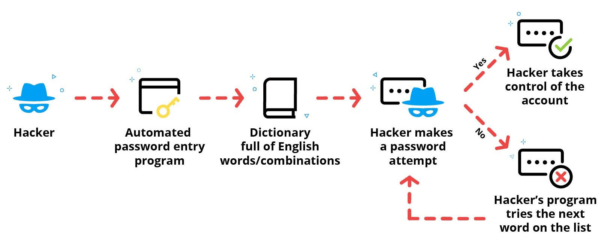
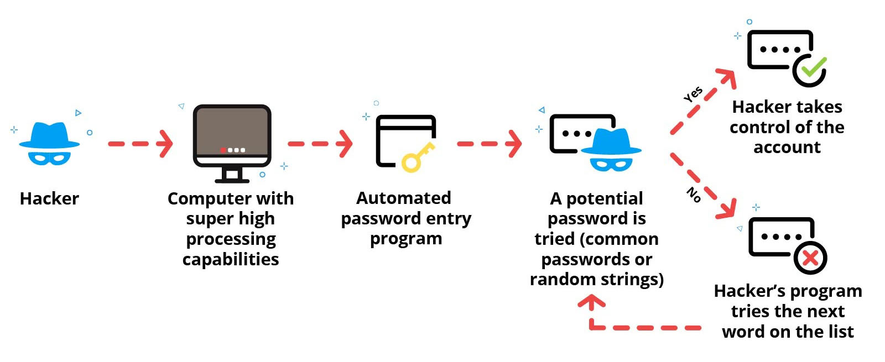
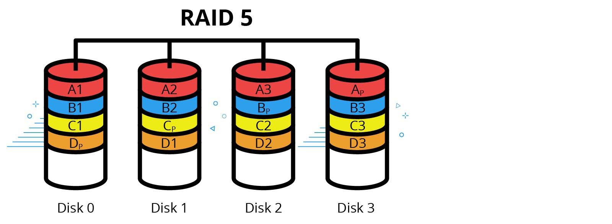
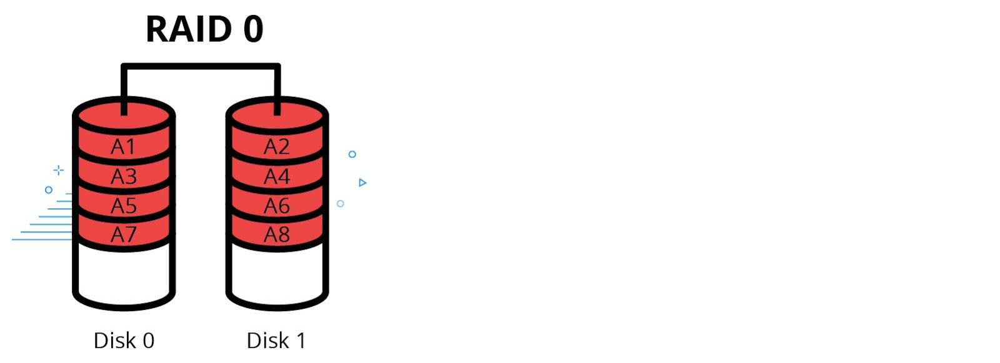
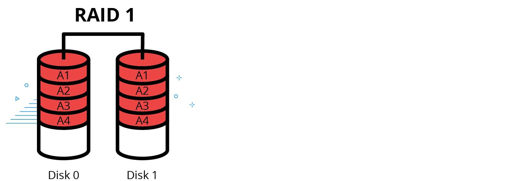

CTEC-101 CyberSecurity wk14
Snooping- Attempting to secretively discover private information about a person, company, or other entity.
Wiretapping- A form of eavesdropping that uses programs such as packet sniffers to capture data being transmitted over a network.
Social Engineering- The use of deception to gain personal and/or private information for unlawful purposes.
Reconnaissance- The passive gathering of information about a potential victim.
Pretexting- Tricking a victim into revealing sensitive information under false pretenses.
Email Attack- Exploiting a victim using email messages.
Browser Attack- Convincing a victim that they are performing a legitimate task within their web browser window when, in fact, they are being tricked into revealing sensitive information or installing malware on their computer.
Man-in-the-Middle Attack- An attack where the attacker secretly relays and possibly alters the communications between two parties who believe they are directly communicating with each other.
Replay Attack- An attempt to connect to a server by capturing and resending authentication information.
Impersonation- TCP session hacking and other methods where an attacker takes over the communication to a server by appearing to be the victim.
Denial of Service- An attack that attempts to overload a system so that the services it provides are no longer available to legitimate network clients.
Malware- Software designed to infiltrate or damage a computer system without the owner's consent or knowledge.
Password Attack- An event in which a hacker tries to gain access to a secure account, such as an email or bank account, in order to steal personal information.
Identify Theft- An occurrence in which thieves steal other people's personal and financial information for their own personal gain.
10.2.1 Confidentiality Concerns
Snooping - often an inside problem
Wire Tapping - eaves dropping - packet sniffers that intercept data on a wired or wireless network
Social Engineering - tricking people to reveal personal information
Reconnaissance = shoulder surfing, dumpster diving, eavesdropping
Email hoaxes
Browser Attack - tricks people into revealing sensitive information by making a website look genuine
Pop-Up Attack - part of Browser Attacks
10.2.2 Confidentiality Facts
Snooping- A technique used to secretively discover private information about a person, company, or other entity. This is often an insider threat within organizations.
For example, an employee may look at emails when a computer is left logged in and unattended. Another example is an IT employee who has administrative access looking in confidential employee files.
Wiretapping A common threat that involves the direct use of technology. In the digital world, wiretapping is a form of eavesdropping that uses programs such as packet sniffers to capture data being transmitted over a network.
With the proper tools, unauthorized people can intercept data on either a wired or a wireless network. One of the best ways to protect against wiretapping threats is to use data encryption.
Social engineering- Techniques that use deception to gain personal and/or private information for unlawful purposes. Be aware that:
Attackers are often more successful in obtaining confidential information using social techniques rather than technology, such as wiretapping.
Attacks may be done in person, on the phone, in a browser window, or through an email message.
Attackers often trick victims into revealing sensitive information.
-The internet is a great way to learn about the latest social engineering exploits.
It is important to keep the work area physically secure by locking doors and having security keys for authorized personnel.
Technological security measures are only partially effective against these types of attacks. The most important thing you can do is to train users to:
Be aware of their surroundings when entering pins or passwords.
Lock workstations when they walk away from them.
Be familiar with the many types of social engineering attacks and how to avoid becoming a victim.
Know who they can share information with and who they should not share information with.
Know the procedures for confronting unauthorized people in the workplace where security could be compromised.
Reconnaissance- A type of social engineering exploit that passively gathers information about a potential victim. The goal is to get the information needed to further exploit the victim. Common reconnaissance techniques include the following:
-Shoulder surfing is looking over a user's shoulder to obtain for sensitive information displayed on the screen. The attacker can also:
Watch keystrokes being typed on a keyboard.
Observe a user through a window.
Obtain information from video footage or surveillance cameras.
-Eavesdropping is overhearing a conversation to obtain sensitive information.
-Dumpster diving is searching through trash for discarded documents containing sensitive information.
Pretexting- A engineering technique that attempts to trick the victim into revealing sensitive information under false pretenses. Pretexting can take many forms such as:
Intimidation to frighten a user into revealing information or performing an action. The attacker assumes a false position of authority over the victim and attempts to use intimidation to obtain sensitive information.
Familiarity to leverage a supposed friendship to convince the victim to allow access, provide sensitive information, etc. Social validation uses peer pressure to coerce the victim into bending rules or revealing confidential information.
Email attacks- A form of social engineering that attempt to exploit a victim using email messages. Email attacks may come in the following forms:
Phishing emails are crafted to appear as though they were sent from a legitimate organization, such as a bank or an e-commerce website. These emails convince the user to click a link that opens a malicious website where the user is then tricked into providing sensitive information.
Spear phishing is a variation of phishing attacks that involves gathering as much information about the victim as possible, such as online bank or credit card company. The attacker then sends phishing emails that appear to be from the trusted bank or credit card company.
Scams and hoaxes prey on recipients who are overly-trusting. The attacker tries to trick the user into to doing something such as sending a small amount of money in return for a supposedly greater amount of money later, deleting key system files, or downloading malware.
Browser attacks- Browser attacks are a type of social engineering. The attacker tries to convince the victim that revealing sensitive information or installing malware on the computer is a legitimate task. Browser-based attacks can take many forms including the following:
Pharming redirects web traffic intended for a legitimate site to a malicious site that looks identical to the legitimate website. Once there, the victim is tricked into supplying sensitive information, such as usernames, passwords, bank account numbers, or credit card numbers.
Rogue anti-virus attacks employ a pop-up browser window that tells the user the computer is infected with a virus and to click a link to clean it. Sometimes this exploit merely tricks users into paying for worthless software they don't need. However, it is also frequently used to install malware on the victim's computer.
10.2.3 Integrity Concerns
Man-in-the-middle (On-Path Attack): intercept data between server and client
Replay Attack: sniffs packet trying to get authentication. hacker then tries to log into server with client's captured credentials.
Impersonation: TCP hijacking - you gain control of the host and logically disconnect. then you cut off the client and pretend to be the client.
there is an HTTP Cookie hijack, also.
Impersonation is also called 'Session Hijacking'
10.2.4 Integrity Facts
On-path attack- An on-path attack (also known as a man-in-the-middle attack) is a real-time attack on a live network connection. In this type of attack, a hacker intercepts communication between a client and a server. The hacker's computer impersonates the server to the client. At the same, the hacker impersonates the client to the server. The hacker can then intercept and modify the data in transit. With the right software and the right vulnerabilities, this attack is quite easy to perform.
On-path attacks are commonly used to steal credit cards, online bank credentials, and other confidential information. On-path attacks are often able to capture data being sent in plain or clear text (text that has not been encrypted). Encrypted text is known as cipher text. The process or algorithm used to encrypt/decrypt the cipher text is known as the cipher.
Replay attacks- In a replay attack, a hacker sniffs the packets between a client and a server in hopes of obtaining authentication information. When the client and server are no longer communicating, the hacker resends the captured authentication material and tries to connect to the server.
The server thinks the hacker's computer is the original client and accepts the connection. In this case, the hacker doesn't have to decrypt the captured authentication information, only submit the still-encrypted credentials. After authenticating to the system, the hacker gains access to the victim's resources or data.
Impersonation- The term impersonation usually refers to a social engineering tactic where a hacker pretends to be a member of senior management who is authorized to gain access to a system. In hacking technology, it can also refer to hijacking a networking session and masquerading as another identity.
For example, in a TCP session hijacking, the attacker gains access to a host on the network and logically disconnects the client; the hacker then pretends to be the client. The concept of session hijacking can also be used with an HTTP session. For example, the hacker could hijack cookies from a web browser. To the web server, the hacker appears to be the original web client and takes over the original HTTP session that's already been initiated.
If an attacker captures a user's username and password through social engineering or other means, the attacker could impersonate the user by logging into the user's account with the captured authentication credentials.
Unauthorized changes- On-path attacks, replay attacks, and session hijacking are often used to gain unauthorized access to a system. With system access, hackers can steal even more confidential information. They can also alter or corrupt data. Cyber criminals often launch destructive malware attacks that compromise data integrity and disrupt communication networks.
10.2.5 Availability Concerns
Data needs to be available.
Denial of Service Attack: DOS attack attackers overload a server with bogus request so real transactions cannot occur.
Distributed Denial of Service Attack: a 'Zombie Master' (or 'Bot Herder') uses bot malware to increase the impact of the attack. the Zombie Master uses malware infected machines to each launch DOS attacks. the infected machines are know as 'Zombies'
Power Outages - you need a UPS or Uninterrupted Power Supply
Hardware Failure - RAIDS -
Data Destruction - accidental or intentional
Service Outage - Cloud systems sometimes go down -- keep offline copies of important files
10.2.6 Availability Facts
Denial of service (DOS)- The goal of a denial of service attack is to overload a system so that the services it provides are no longer available to legitimate network clients. To understand how these attacks work, consider a simple analogy. Suppose you went to the bank to deposit a check. When you get to the bank, you find that the lobby is filled with people and you're unable to get inside. None of the people inside the bank are bank customers. They're there only to disrupt the bank's ability to service customers.
This is similar to how a denial of service attack occurs. For example, let's say your company has a web server that provides driver downloads to customers. With a denial of service attack, the attacker overloads the server with false requests to the point that legitimate requests can't be processed. In some cases, a denial of service attack may even exploit a flaw in the operating system of the web server that can cause it to reboot or crash.
-A variation of this type of attack is called a distributed denial of service attack (DDOS). In this case, the attacker uses bot malware to enlist multiple systems to increase the magnitude of the attack. The compromised systems, called zombies, are infected with malware that allows them to be remotely manipulated by an attacker who's often called a zombie master.
Power outage- We all know that without electricity, computer systems won't work. A bigger concern is that when a computer system loses power abruptly, it can corrupt and lose data.
This is why critical systems such as database servers and web servers should be equipped with an uninterruptible power supply (UPS). These systems provide a temporary power source during an outage that gives the system enough time to shut down cleanly without data loss or corruption.
Hardware failure- Hardware failures can occur for many reasons, such as power surges, power spikes, overheating, and dust accumulation. While some of these causes can be prevented, computer components such as hard disks will eventually fail.
To maintain access to data on critical systems, most businesses maintain redundant copies of data on separate disks.
Data destruction- System administrators are often responsible for the disposal and destruction of sensitive data stored on old hard disks. This is particularly important when storage devices leave an organization.
However, data destruction can also occur for malicious or accidental reasons. Natural disasters, acts of terrorism, and accidental coffee spills can all harm computer components and destroy data. To prepare for these events, businesses should store regular backups of data in different locations.
Service outage- As businesses rely more and more on cloud hosting solutions for their products and services, their productivity depends on the reliability and quality of their internet connection. However, even if the internet is up and running, employees may not be able to access their files when the cloud service is down.
Google, Amazon, Microsoft, and other cloud hosting businesses work hard to avoid any downtime, but there will always be short periods of hardware or software failure. For this reason, businesses should keep offline copies of any critically important files or applications.
10.2.7 Digital Privacy
Communication Services - Email, Social Media, File Sharing Services, etc... they will each have privacy settings
Metadata is information about the information - include where and when you use a service, the language, type of device
Privacy at Work - companies can see what you do
10.2.8 Digital Privacy Facts
Social media and email- Social media, email, instant messaging, and file sharing services generally have controls that let users decide what information is available to which people. For example, a social media user may want text posts to be visible to the general public, but only allow friends to view their pictures, and not let anyone see the phone number and email address.
However, anyone who uses online services should be aware that any information they share will likely be made available to third parties, including advertising and marketing firms, government institutions, and others who are interested in analyzing big data.
Marketing metadata- It's important to understand that when you signed up for your social media or email account, you agreed to that company's terms of use. Facebook, Instagram, and Gmail don't provide their services for free because they're nice; they do it because they want to make a profit.
These companies make profits by extracting metadata from information they process on your behalf. Metadata (information about information) can include where and when you use the service, the language you use, the sites you access, keywords from your posts and messages, the kind of device you're using, etc. These companies analyze the data and use it for marketing and advertising. They can also sell their metadata to other companies.
Secure transactions- Entering personal information or conducting financial transactions online is convenient and efficient. However, consumers need to adopt safeguards to protect themselves against identity theft and fraud.
Safeguards include sharing a mobile device only with people you trust, never using public Wi-Fi to conduct ecommerce, using strong account passwords, verifying that all online transactions are conducted using data encryption (HTTPS), and conducting ecommerce transactions only with businesses you trust.
Internet usage monitoring- Some employees may think that access to the internet at work should be completely unrestricted. However, this isn't the case. Consider that the company owns or pays for the computers, the network infrastructure, and the internet connection, not to mention the time of the employee.
Because inappropriate computer use can be a huge liability for a company, most companies require employees to agree to an acceptable use policy (AUP) or a fair use policy. These types of policies specify exactly what can be done with such things as the corporate network, website, computer/systems, and facilities.
The content of these policies vary depending on the organization. For example, nearly all companies prohibit employees from accessing adult content or engaging in illegal activities. Some policies restrict personal computer use to designated break times, and others prohibit it altogether.
In addition, some companies use these policies to specify the type of hardware or software that can be installed on the employee's company computer. While companies are within their rights to impose any restrictions, most recognize that being too restrictive tends to drive employees away.
Another issue is any communications made through a company's network, including private email, may be stored and monitored. Therefore, employees should exercise judgment and caution when using company computers for personal use, even when such use is allowed by the acceptable use policy.
Employees often bring their own devices (laptops, tablets, and phone )to the workplace. The employer has the right to expect employees to follow rules of behavior. These rules should be implemented to protect the network and the organization as each device brought in increases the vulnerability of the network.
Data protection- To improve the security of sensitive information on your device if it is lost or stolen, you should consider the following:
-Remote wipe�This feature allows you to send a command to your mobile device to delete data. It can keep sensitive information from falling into the wrong hands.
-Screen lock�While determined hackers can find ways around a screen lock, having a lock will keep casual users from getting access to your device.
-Locator app�Locator applications might help you find a misplaced device before a determined hacker does. Turning off locations services does not improve your device's security and it will make it harder to find your device if you lose it.
-To avoid having your mobile device exploited by a hacker or infected by a virus, you should consider the following:
-Operating system updates�Keeping the operating systems up to date with the latest updates and patches ensures you have fixes for known security issues.
-Device authentication�It's important to configure your screen lock to require some sort of authentication to physically access your device.
-Anti-malware�Anti-virus apps can protect your device. Make sure to research, find, and install the most effective ones.
Workplace surveillance- Employers may implement guidelines and methods to monitor many aspects of the workplace.
This type of workplace surveillance is often classified as follows:
-Physical monitoring�Physical monitoring is often used to monitor the physical whereabouts of employees while on company property. This usually done with some type of camera (CCTV). This helps ensure the security of not only the company's assets but can also help in protecting the employees. In addition, some companies may have requirements for alcohol and drug testing.
-Security assurance�Security assurance polices allow companies to monitor the type of data employees send to ensure that they are not divulging confidential information or are compromising the company's security.
-Monitoring data�To gain an understanding of an employee's productivity, some companies monitor and analyze data communication, such as the duration of phone calls made.
10.2.9 Malware Types
software designed to harm a computer system without a users knowledge or consent.
Virus - scan and keep definitions up to date; real time protection
Worm - can propagate itself
Trojan - seems like a legit piece of software - can cause a lot of damage -- sometimes used to make a 'zombie' in DDOS attack
Spyware - intercept data or assume partial control over a system - can install additional software
Adware - plays and displays ads to users - spies on browsing history
Be certain to install Anti-Malware software and update regularly
10.2.10 Password Attacks
Dictionary Attack - use a 'dictionary' of common words and word combinations to try and guess the password

A Dictionary attack can be used to uncover a decryption key so that encrypted data can be decrypted.
Brute Force - where attacker tries to use every possible combination of letters and numbers until they find the password - require a great deal of computing power

Traffic-Interruption - attack uses sotware to interrupt the network traffic and intercept passwords as they're passed between computers.
Man-in-the-middle (MITM) attack - hacker impersonates website or app to convince someone to enter their password
keylogger attack - software is installed on a system that record's keystrokes
Social Engineering Attacks
10.2.11 Identity Theft
Identity theft is stealing someones PII (Personally Identifiable Information)
Identity Fraud = is using that information for illicit gain.
10.2.12 Recognizing Social Engineering Exploits
10.3 Authentication
Authentication, Authorization, and Accounting = AAA
Type 1 Authentication- A type of authentication that requires the user to provide something that they know, such as a password or PIN.
Type 2 Authentication- A type of authentication that requires the user to provide something that they have, such as a key fob, electronic chip, or smart card.
Type 3 Authentication- A type of authentication that requires the user to provide something that they are, such as a fingerprint, handprint, retinal pattern, face, or voice.
Multifactor Authentication- Authentication that requires two or more evidences of authentication, usually of different types.
Single Sign-on- A method of authenticating with one system to gain access to other related systems.
Discretionary Access Control (DAC)- A type of access control where a user has complete control over a resource, and also determines the permissions other users have to those resources.
Role-based Access Control (RBAC)- A type of access control that restricts access based on the user's role in an organization.
Mandatory Access Control (MAC)- A type of access control that historically was associated with multilevel security and military systems and may use a security clearance to restrict access to resources. The security manager controls the security policy, and users aren't able to override the policy.
Accounting- The process of keeping track of user activity while attached to a system.
Logging- The capturing and storing of computer and user events.
Non-repudiation- The ability to ensure that someone can't deny that they performed a certain act.
10.3.1 Authentication
proving you are who you say you are. Type 1 - something you know; Type 2 - something you have; Type 3 - something you are.
Type 1 - pattern, password, PIN
Type 2 - Key, Fob, Electronic Chip, Smart Card - more secure than Type 1 - harder and more expensive to implement
Type 3 - Fingerprint, Handprint, BioMetrics - More secure than Type 1 or Type 2
Multifactor Authentication - authenticate yourself with more than 1 Type
Single-Sign-On - by authenticating 1 time you have access to sites, email, youtube
10.3.2 Authentication Facts
Type 1 authentication- Type 1 authentication is something you know. It is the most common authentication type. If you're reading this lesson, you used type 1 authentication when you logged into the TestOut account. When you enter an account password, the system can be reasonably sure you are who you claim to be. Other kinds of type 1 authentication are:
Personal identification numbers (PINs)—single-use passwords, and answers to security questions. This kind of information is known as personally identifiable information (PII).
Passphrase—some programs require a group of words, rather than a single-word password. This adds complexity to the authentication. Therefore, it is more secure than a password.
Pattern lock—many smart phones have the user authenticate by drawing a specific pattern on the screen.
Type 1 authentication is cheap and easy to implement. The downside is that it's also easy to dupe. If the password, passphrase, pattern, etc., is compromised, someone can easily authenticate into the account.
Type 2 authentication- Type 2 authentication is something you have. Examples of type 2 factors are:
Keys.
Hardware tokens such as fmaobs, electronic chips, and smart cards.
Physical location. For example, you can set your smartphone to unlock automatically if it's inside your home.
Software tokens. Software tokens are typically used as part of a two-factored authentication process.
Software tokens are stored on a device such as a desktop computer, laptop, PDA, or cell phone and can be duplicated. Typically, when accessing a system that uses software tokens, you enter your user name and password. Then, you enter the soft token that is sent to you in a text message or email.
An app can also be installed on a device such as your cell phone. The app constantly sends soft tokens that are timed with the system you are trying to connect to.
One time password (OTP). This is a password that is generated, sent, and used for only one session. It is a randomly generated value. It eliminates the password being guessed, cracked or discovered. The risk is that these OTPs are vulnerable to interception.
Type 2 authentication is more secure than type 1. Someone would need to physically steal or copy your authentication token to impersonate you. The downside is that it's more difficult and expensive to implement.
Type 3 authentication- Type 3 authentication is something you are. Computers can use biometric scanners to measure unique aspects of your physical body, such as your fingerprints, handprints, retinal patterns, face, or voice.
Type 3 authentication is more secure than type 1 or type 2. The downside is that it's more difficult and expensive to implement.If you have a fingerprint scanner on your phone, that's type 3. Type 3 authentication is the most expensive authentication type to implement and the hardest to dupe.
Multifactor authentication- Systems and accounts that need extra security often require multifactor authentication, generally from two or more types. This means you must authenticate yourself two or more times to gain access to a system. A common example is to require a type 1 password and a type 2 smart card.
Single sign-on- Single sign-on (SSO) is a method that allows you to log into one system and have access to other related systems. A common example of SSO is Google services. By authenticating one time, you gain access to your Gmail, YouTube, and Google Drive accounts.
10.3.3 Authorization
Process of deciding what a user can do after being authenticated. kept on ACL (Access Control List).
DAC (Discrete Access Control) - the owner (or creator of the list) is the only one that has Full Access Rights. ex: google docs
next 2 are 'Rules based' the modify the ACL based on established rules
Role-based Access Control (RBAC) - grants access based on assigned role; ex: TestOut - Students can access the course, Teachers can access all students in their course, Administrators can access all Students and Teachers under them.
Mandatory Access Control (MAC) - each object in the system is given a numeric value and each member is assigned a security level - they can access anything equal to their current level. -- ex: government and military
10.3.4 Authorization Facts
Discretionary access control (DAC)- Emphasizes the importance of the owner (creator) of a resource. The owner:
Is the only person with full access rights to the resource.
Can modify the ACL to allow others to view, edit, or copy.
Can also transfer ownership to another user.
Google Docs is an example of the DAC model. When you create a Google doc, you specify the permission others have for the document.
Role-based access control (RBAC)- Modifies the ACL based on pre-configured rules. Role-based access control systems grant permissions to users based on each user's role. For example, in this course:
As student user, you have permission to view course resources, such as videos, labs, and text lessons. You also have permission to view your own gradebook. However, you don't have permission to view your classmates' grades or make direct changes to the gradebook.
Teachers have the same permissions as students, plus the ability to view and edit the grades of students in their classes. However, they can't access grades of students in other teachers' classes.
Administrators can view and edit the grades for every student at the school, regardless of who the teacher is.
In each case, the user's permissions are determined by the user's role.
Mandatory access control (MAC)- Uses security clearance levels to specify the users who can access designated resources. It is also a rule-based control system. Mandatory access control is often used by governments and militaries. In this model:
Each resource in a system is given a numeric clearance level, as is each user.
The more sensitive the data, the higher its level.
To access a given resource on the system, a user must have a clearance level equal to or higher than the level of the resource.
Mandatory access control is an example of least privilege. Each user is given only the permissions required for assigned tasks.
10.3.5 Accounting
in an Access Control Framework - Accounting is keeping up with who is doing what on the system. If something goes wrong it is vital to security and determining problems.
Accounting is the Logging of Events
Events are things such as users signing in or out, accessing or modification of files
Logging is keeping a detailed list of each event. - it will note the date, username, computer id, log in time, and log out time
another important aspect of logging is Non-Repudiation - taking methods to prove someone did a crime - things like setting up cameras for video; another was is by using Type 3 authentication (Biometrics)
10.3.6 Accounting Facts
Logging- At its core, accounting is simply the logging of events. To understand this, you must understand two terms: events and logging. An event can be just about anything that happens on a computer. A user signing in or signing out; accessing or modifying a file; and visiting a website are all commonly used as accounting events.
Logging is keeping a detailed list of each event. For example, whenever a user signs into a computer, the log will record the user's name, the computer the user accessed, the date and time of the login, and how long the user stayed signed in. Another example is the log of websites visited by the user in the web browser's history tab.
Non-repudiation- If someone is caught trespassing on a network or stealing data, the person will probably deny it. Non-repudiation is taking measures to verify the identity of someone performing an action.
One of the most common non-repudiation techniques is to set up surveillance cameras. Video is commonly used for identification. Another non-repudiation measure is to implement strong authentication protocols.
Because type 3 biometric factors such as fingerprints and retinal scans are hard to duplicate, they provide strong evidence that an account was being used by its proper owner and not by another person.
Two more examples are signatures and receipts. Having a physical or even a digital signature can provide proof that someone created a file or approved an action or document. A receipt for a product or a service can provide proof that a person was intentionally involved in the transaction.
10.3.7 Create a User Account
10.3.9 Configure iPad Access Control and Authentication
10.4 Data Encryption
Data Encryption- The process of encoding or translating data into another form so that only the intended recipient can decrypt and read the data.
Caesar Cipher- An early example of encryption used by Julius Caesar to send confidential military messages.
Data at Rest- Data in a persistent storage medium, such as a hard drive or optical disc.
Data in Transit- Data that are being transported from one device to another, whether by radio, electrical, or light signals.
Symmetric Encryption- A form of encryption that uses only one key to encrypt and decrypt a file. This is a less secure form of encryption.
Asymmetric Encryption- A form of encryption in which both parties involved have a public key and a private key. By using complex mathematical formulas, the computer generates the keys in a way that any file encrypted with the public key can only be decrypted by the private key.
Security Certificate- A way for two computers to verify their identity before they exchange information.
10.4.1 Encryption
DES encryption uses 56 bit encryption
AES encryption is 256 bit encryption
10.4.2 Encryption Facts
The Caesar cipher- One of the earliest examples of encryption was the Caesar cipher, which was used by Julius Caesar to send confidential military messages. The cipher worked by substituting each letter for the one that comes three letters later. A became D, B became E, and so on. Even if the message was intercepted, the enemy couldn't read it. Only Caesar's generals, who knew the key, could decrypt and understand his messages.
The Caesar cipher is a good model for what happens in modern encryption. Plain text is encrypted using a key and only people who have the key can decrypt it.
Data at rest- Digital data is generally in one of two states: at rest or in transit. Data at rest is data in a persistent storage medium, such as a hard drive or optical disc. Examples of data at rest include data found on files, disks, or mobile devices.
Data at rest can be encrypted, either within specific files and folders, or the entire storage medium (full disk encryption).
Data in transit- Data in transit are data that is being transported from one device to another, whether by radio, electrical, or light signals. Examples of data in transit include email, Hypertext Transfer Protocol Secure (HTTPS) used to encrypt Web pages, a virtual private network (VPN), or mobile applications.
Data in transit can also be encrypted.
Encryption standards- Whenever you send information from one computer to another, there is an opportunity for a third party to intercept the signal. This is a major concern because private information can be used to steal a person's money, impersonate identity, etc.
Encryption algorithms scramble signals to make them unreadable to anyone who doesn't have the correct key to unscramble them. Even if a criminal intercepts an encrypted signal, the data will be useless.
One way an attacker can try to find a key is by brute force. This means trying every possible key, one at a time, until one of them works.
--In 1977, IBM developed the Data Encryption Standard (DES). DES encryption used 56-bit binary keys. Each key could be one of 72 quadrillion possible values. DES worked fine for several years, but by the late '90s computers had become so powerful that a brute force attack on a DES key would take a few days.
--In 2001, the Advanced Encryption Standard (AES) was created. AES keys can be up to 256 bits long, which would take a modern computer trillions of years to brute force.
Wi-Fi encryption- Wireless network routers often support different encryption protocol standards. For the highest level of Wi-Fi security, use Wi-Fi Protected Access 2 (WPA2). WPA2 has replaced WPA and Wired Equivalent Privacy (WEP).
In addition to using the latest wireless encryption method, be sure to use a strong network password and ensure that your wireless router has the latest firmware updates installed.
Do not use the WEP standard, which is vulnerable to even the most novice hackers.
Email encryption- S/MIME (Secure/Multipurpose Internet Mail Extensions) is a protocol used to encrypt emails. It allows the sender to digitally sign and encrypt emails.
An encrypted email server will encrypt email communications between the server and an email client but will store the email in an unencrypted form. A proper certificate must be used to encrypt and decrypt S/MIME emails.
HTTPS- Information is transferred on the World Wide Web using the HTTP protocol. However, HTTP transfers data as plain text with no encryption. To add encryption, websites use a protocol called SSL. When combined, HTTP and SSL make HTTPS, which both transmits and encrypts data.
10.4.3 Asymmetric Encryption
Both parties need a public and private key -- more secure. Send a message with the receiver's public key and they use their private key to unlock.
They in turn send you a message with YOUR public key and then you use your private key to unlock it.
10.4.4 Certificates
Security Certificate is a way for 2 computers to verify they are who they are before exchanging data
after the certificate is approved the computer and server complete a 'Handshake'.
Certificates are issued by the Certificate Authority and they validate a website.
Configure File Encryption
10.5 Device Security
Device Password- A method of protecting a computer device from unauthorized access by forcing users to log in before using the system.
Firewall- A device that controls the flow of network traffic to protect systems from unauthorized network connections.
Anti-Malware Software- Software that helps protect against malicious software infections.
Anti-Spam Software Software that helps remove unwanted, unsolicited email.
Ecommerce- The buying and selling of products or services electronically, typically through the internet.
Data Destruction Policy- Directions for disposing computer devices and destroying data when it's no longer needed or when a storage device needs to be replaced.
Windows Defender- Anti-malware software that is installed and configured by default on Windows systems.
Windows Firewall- A host-based firewall installed by default with Windows that loads every time the computer starts up.
10.5.1 Password Best Practices
keep your password secret! -- never share your password - 16 or more characters include letters, #s and symbols
password manager
account policy for a business - group policies -- in the Local Group Policy Editor we can Enforce password history, set a Max password age, a Min password age and other parameters
Account Lockout Policy can also be configured -
most websites have a reset password option.
10.5.2 Password Facts
Password habits- With your password, attackers can take your money, steal your private information, and even commit crimes while pretending to be you. Because of this, it is vital that you adhere to the following good password habits.
Keep your password secret. Never write it down, and never send it in an email. If a customer support representative asks you to send your password through an email, chat, or phone call, they're most likely a criminal trying to scam you. If you must share your password, share only it with a person you completely trust, such as a spouse.
-Choose a secure password. A good password should be 16 or more characters and contain a combination of letters, numbers, and symbols. Also, choose a password that would be difficult to guess. Birthdays, anniversaries, and names of family members are poor choices for passwords. Do not use the word password as your password.
-Use a unique password for every account you have. If you use the same password for multiple services or sites, a data breach at one will compromise your security at all of them.
-Never enter your password into an unencrypted website. If you do, it will be sent as plain text and someone could intercept the signal and learn your password.
Password managers- Because most users have dozens of accounts for applications and websites, many people choose to use a password manager.
Password managers are installed as an app or a web browser extension that's accessed with a master password. The password manager generates and encrypts passwords for all of your individual accounts.
Most password managers are safer and more secure than storing a list of usernames and passwords. It is much better than using the same password for multiple accounts. The main risk with password managers is if the master password is somehow compromised, all accounts can be accessed.
Group password policies- Most companies use a configuration setting called an account policy to encourage employees to choose secure passwords. Account policies can be configured on individual computers or they can be grouped together and stored on a network domain as a group policy. Group policies can be applied to any account that logs into the domain.
The following are a few local account policy settings that you can enforce on Windows:
Password history is a setting that is designed to keep people from reusing old passwords. With password history enabled, you can choose from 1 to 24 passwords for the system to remember. A value of 24 means that the user has to use 24 unique passwords before being allowed to reuse a previously used password.
Maximum password age is a setting that determines the number of times a password is valid before it expires and the user is forced to change it. A typical value for this setting is 90 days.
Minimum password age is a setting that prevents users from reverting to old passwords immediately after changing a password. This is usually set to one day.
Minimum password length can be set from zero to 14 characters.
Password complexity is a setting that makes sure a password isn't too easy. Complexity requires that the password doesn't include a user's account name and that it includes a combination of lower- and upper-case letters; numbers; and non-alphabetic characters such $,%,$,#, etc.
Storing passwords using reversible encryption is a feature that should be disabled. Enabling it can allow certain applications to store passwords as plain text. This would make user accounts much less secure.
Account lockout policies- Account lockout policies are settings that protect an account if users fail to authenticate successfully after a certain number of attempts.
For example, an account lockout threshold is set to six invalid logon attempts. After six incorrect passwords, the user is locked out of the account. The purpose of account lockout policies is to prevent hackers from trying to guess someone's password and gain access to the system.
Since it's common for users to forget passwords, administrators often need to unlock user accounts, typically by resetting the password.
Account lockout policies can also include an account lockout duration and lockout counter reset time. This means that if an administrator is not available to unlock an account, a user can wait a certain amount of time before trying again.
Password reset options- Website accounts are often set up with a built-in password reset option. This allows users to reset the password. To verify identity, a user must either answer security questions, such as mother's maiden name, or enter a security code that's sent to a cell phone or to an email address.
When a password is reset, a user is typically notified by email to make sure the resetting was intentional.
-Passphrases Passphrases are best when they use:
--Random words�Although a passphrase can be as simple as, I love music because it makes me happy. It is best if the phrase is combination of common words, but not necessarily a flowing sentence. For example, music Meat moonbeam tomato. The longer the password or passphrase is, the harder it will be to guess.
---Symbols�Adding symbols such as @#! to the passphrase makes it that much more difficult to guess or crack.
----Spaces�One of the main differences between passwords and passphrases is that passphrases can include spaces in between the words in the passphrase, again making it that much more difficult to guess or crack.
10.5.5 Securing Devices
Personal info on computers are prime targets for hacking.
- Device Passwords: change the default password
- Firewalls: control the flow of network traffic - configures what is allowed and not allowed. Network or Host Firewalls -- most networks use both
- Anti-Malware: virus, worms, trojans, spyware, adware
- Spam Filters: anti-virus spam filtering
- Data Destruction: dispose of Data before getting rid of computer or devices
10.5.6 Securing Devices Facts
Device passwords- Wireless access points, routers, and other devices often ship with a default password that an attacker can easily find on the internet. For this reason, it's important to change the default password to something secure.
Computing devices such as laptops and smartphones typically give the option of using the device without a password or using another authentication method. While it's convenient to use devices without security, it's a really bad idea. If you lose the device, sensitive data could immediately be in the hands of a stranger.
Firewalls- Firewalls control the flow of network traffic and protect systems from unauthorized network connections. They're configured with a set of rules that define what kind of traffic is allowed and not allowed.
For example, if a malicious user on the internet tries to establish a connection to a computer, the firewall identifies it as a violation and blocks the connection. There are two general types of firewalls:
Network firewalls are configured at the border of the network, where it connects to the internet. By placing a firewall in this location, it can protect an entire network. Proxy servers can be configured as network firewalls as well.
Host firewalls are installed on individual computer systems and protect only that system. For those who run a Windows system, Windows Defender Firewall is enabled by default. There are many third-party host firewalls available as well.
To avoid conflicts, be sure to uninstall Windows Defender Firewall if you choose a third-party firewall.
Typically, most networks use both types of firewalls. Network firewalls must be purchased and manually installed. Host-based firewalls are usually installed and enabled by default on most computer systems.
Data encryption- Data encryption is the process of translating data into an unreadable form that can deciphered only with a secret key. Windows 10, for example, can encrypt your entire device. This is a form of data encryption at rest.
Other technologies provide the ability to encrypt the data when it is being sent to another device, typically over the internet.
Backups- Making a copy of your data, typically on a separate device, is another way to protect your data. This copied data is known as a backup.
Having a backup of your data means that if your data is corrupted, you haven't lost your data. You can retrieve the data from the backup.
Anti-malware- Anti-malware software should be installed on computer systems to detect and prevent malware infections. Malware includes several types of malicious software:
Viruses that attach to files and spread when the files are opened.
Worms that infect systems and spread automatically through the network.
Trojan horse programs that appear to be useful programs but secretly install malware without your knowledge.
Spyware that tracks your computer or browser activity.
Adware that displays unwanted pop-up advertisements.
--Starting with Windows 7 and later, anti-malware software called Windows Defender is installed and enabled by default on Windows systems. You can also install third-party anti-malware packages.
You can have only one anti-malware package installed on a computer at a time.
If you install a package and later choose a different one, be sure to uninstall the existing package before installing the new one.
--Anti-malware works as follows:
Viruses and malware are identified by signatures or definitions.
Attacks, including new attacks, are added to the software's database of viruses and malware.
The software searches the computer for these signatures.
The anti-malware software needs to be updated regularly. It can recognize the infection on a computer only if the software is current.
You can be proactive in preventing malware by taking the following actions:
Regularly scan for malware.
Avoid logging on with administrative privileges unless necessary.
Exercise caution when opening file attachments, downloading files from the internet, installing new software, and clicking links in emails.
Set your anti-malware software to automatically scan your network on a regular basis. Sometimes malware can come from an infected machine in the network.
A few signs to watch for that can indicate your system has been infected with malware are:
Pop-ups show up in your browser and all the sites you visit.
Sluggish processing time for websites to load or processing activities to complete.
The system repeatedly crashes.
A different toolbar displays. Sometime extra toolbars display.
The default web browser has changed. You may get suspicious search results.
Banner ads (third-party advertisements) display across the screen, often on multiple pages and often advertising free bogus security software programs.
Redirection to a website different than the one you specified. It usually displays advertising, but could also attempt to capture authentication credentials.
When an infected file is detected, the anti-malware software is usually good at taking care of the problem. You can manually configure the actions you want the software to take in the event of a detected infection. You can have:
The infection removed through cleaning.
The infected file quarantined by blocking the file from being opened.
The infected file erased.
Anti-spam- Spam is unwanted, unsolicited email that's sent to an email account. Key points are:
Spam often carries viruses, advertisements for questionable products, and phishing attacks.
Opening an attachment can execute a malicious file that infects your computer.
Clicking a hyperlink in the message can take you to a malicious website.
Some anti-malware software can block spam for you, but some can't. If your package doesn't, consider installing additional anti-spam software or switching to an anti-malware package does block spam.
Although some spam is merely annoying; it does use processing resources.
Data destruction- When computers wear out or become obsolete, they're typically replaced with newer systems. System disposal can present a security risk. You must dispose of computers in a manner that prevents sensitive data from being exposed.
If you're selling or recycling a computer, use a special utility to wipe the hard disk drive clean. Deleting the files is insufficient. The data still remains on the drive and can be easily reconstructed by someone with the right skills.
Disk wiping software overwrites the hard drive with random data, obliterating any old data that's still on the drive. If you're disposing of a computer, consider destroying the hard disk to make the data it contains inaccessible.
Updates and patches- A best practice is to update or patch your computer on a regular basis. This helps to protect the devices from being exploited by the latest types of attacks.
Patches and updates are needed for the operating systems, software, and even firmware. These patches can also help prevent zero day attacks, which are attacks that exploit a vulnerability in software before developers discover the vulnerability and patch it.
10.5.9 Ecommerce Safeguards
buying and selling products electronically - protect against ID theft and Fraud.
Business-to-consumer (Amazon) or Consumer-to-consumer (Etsy or Ebay);
Shopping carts save a small file as a 'cookie' in your browser.
Secure Payment Services (Paypal)
be careful what you share - and make certain you trust
Don't save a credit card on sites
Firewall
Strong Password
Credit Card instead of Debit Card because it has better security.
verify HTTPS - for encryption
make certain the site is legit
10.5.10 Ecommerce Facts
Be careful what you share- Share personal information only when it's required and requested by a legitimate business that you trust. Avoid saving credit card numbers and other financial information in your online account.
If you use a mobile device for ecommerce, share only your device with people you would feel comfortable sharing your wallet with.
Don't use public WiFi- Never conduct ecommerce transactions using public WiFi or public computers that might have spyware installed. Ideally, you should do your online shopping on your home computer, behind a firewall with an up-to-date operating system and antivirus software installed.
Use passwords and credit cards- For online accounts, create strong passwords and use a credit card instead of a debit card whenever possible. Credit cards include better protection against online fraud.
Use HTTP Secure- Verify that the online retailer is conducting secure transactions using HTTPS rather than HTTP. This ensures that your financial data will be encrypted and less likely to be stolen by a hacker.
Shop with legitimate businesses- Conduct ecommerce transactions with people and businesses you trust. Investigate all online shopping websites and apps to make sure they're legitimate. Scammers keep themselves busy creating fake storefronts for unsuspecting customers.
Examine URLs closely to make sure they don't include slight variations or misspellings of legitimate sites. If you're unfamiliar with an online shopping retailer, see if they have a social media presence and check out product reviews.
If you're shopping online, make sure you're using a reputable online shopping site.
-When using peer-to-peer payment services such as Venmo, limit your transactions to people you know and trust.
Be suspicious- Be extremely suspicious about deals that seem too good to be true. More often than not, these deals are online scams.
10.5.11 Windows Defender
Detects malware - the default if no other programs are installed.
10.5.12 Window Defender Facts
Malware detection & removal- Anti-malware software has two main functions: virus removal and real-time protection. To detect and remove existing malware, Windows Defender can scan the file system for characteristics that might point to an existing malware infection.
The problem is that if you run a scan and you find malware on the system, it means your system's already infected and needs to be cleaned up.
Real-time protection- The second aspect of system protection is detecting malware before it infects your system. An example of this would be downloading a file from a malicious website on the internet. This is what we mean by real-time protection.
Instead of just scanning for malicious files on your hard disk drives, real-time protection watches what you're doing and tries to detect malware as it's entering the system.
Manual scans- By default, Windows Defender scans your system on a regular schedule. However, you can go to the Windows Defender Security Center from the Settings App and manually scan the system. Windows Defender gives you three scanning options to choose from:
-A quick scan tells Windows Defender to check for malware but it's only going to look in the places where it's most likely to be found, such as your system folders. It does not scan the entire hard disk drive.
--The full scan option means it scans every file on the entire hard disk drive. The disadvantage of a full scan is that it takes a lot longer to go through every single file on the hard disk.
---A custom scan allows you to run the scan where you think the malware might be. You can click Custom and then select the location that you want to scan.
Virus definitions- In the Windows Defender Security Center, you can see if your virus definitions are up to date. Definitions are files that are used by Windows Defender to locate threats such as viruses and spyware. It's important that these definitions are kept up to date to protect your system from any possible new viruses or threats.
Windows Defender automatically updates protection definitions periodically, but you can also manually force an update in the Windows Defender Security Center. The History tab lists items that were detected as potentially harmful.
10.5.13 Use Windows Defender Lab
10.5.15 Windows Firewall
Filter network traffic based on rules.
analyzes network traffic and compares to the rules.
Network Firewalls are separate equipment.
Software Firewalls are setup on local system.
windows has some predefined settings -- network location awareness: depends on public or private networks
10.6 Business Continuity Plans
Information Sensitivity: An attribute used to classify information based on the risk of public disclosure.
Public/Private Classification: A scheme for classifying information based on different levels of public/private distinctions.
Government/Military Classification: A scheme for classifying information based on government and military requirements.
Data Destruction Policy: Directions for disposing computer devices and destroying data when it's no longer needed or when a storage device needs to be replaced.
Data Center: An area used to store and share such things as computer systems, applications, data, and other components such as switches and routers. Data centers may be a room in a building, an entire building, or a group of buildings.
Data Redundancy: A method of increasing fault tolerance by storing data in a way that ensures that the data is recoverable in case of hardware failures. RAID arrays and replication are two data redundancy strategies.
Network Redundancy: A method of increasing fault tolerance by providing multiple network paths between hosts.
Site Redundancy: A method of increasing fault tolerance by providing a complete duplicate of the computers and data at a location away from your main business location.
Power Redundancy: A method of increasing fault tolerance by providing power backups and power failover.
Failover: The ability to automatically switch to a redundant component/system, such as a power source, a hard disk, a network, or a site.
Redundant Array of Independent Disks (RAID): A way to combine smaller and less-expensive disks into a single unit that works together to provide data redundancy.
Backup File: A copy of a file which can be used when the original file has been lost or corrupted. Backup files are typically stored on a separate device, such as a disk, the cloud, or in the network.
Ad Hoc Backup: Unscheduled backups performed periodically.
Regular Backup: Regularly scheduled backups.
System Backup: A backup of the system software, including operating system files.
Bare Metal Backup: A backup that gives you the ability to restore an entire system, including the operating system without needing to install anything on the computer prior to the restoration.
Database Backup: A backup of data stored in a database.
Local Backup: Backups that are stored in the same building or even the same room as the computer systems they are taken from.
Off-site Backup: Backups that are stored at a location far enough from a possible natural disaster while being close enough to recover the data and systems within a reasonable amount of time.
Disaster Recovery: An area of security planning with the goal of protecting an organization from the effects of a natural or human-induced disaster.
Network Attached Storage: A device that contains one or more hard drives that users can access over the network.
Business Continuity: The process of creating systems of prevention and recovery to permit ongoing operation, before and during disaster recovery.
10.6.1 Handling Confidential Information
1 of the most important responsibilities is protecting privacy of customers and the business.
Highly Sensitive: PII (Personally Identifiable Information); PHI (Protected Health Information); CCI (Confidential Company Information)
Medium Sensitive: Possible embarrassment but nothing highly sensitive.
Low Sensitive: Limited to No Harm
another way to do it is:
Public Distribution:
Public Limited Distribution: NDA - can't distribute or talk of the software
Private Internal: For internal use and not to be released
Private Restricted: Trade Secrets - Exclusive info - source code for iOS or Google Search Algorithms
Government and Military
Unclassified
Sensitive
Confidential
Secret
Top Secret
Data Destruction - wiping HDD clean or destroying the HDD
10.6.2 Handling Confidential Information Facts
Information sensitivity: Many organizations classify information based on a scale of high, medium, or low sensitivity.
-Highly-sensitive information must be secured against hackers and disposed of according to applicable laws and regulations. Highly-sensitive information includes:
-The personally identifiable information (PII) of employees or customers. Examples are social security number, home address, driver's license number, date of birth, etc.
-Protected health information (PHI) includes a patient's medical records, payment history, and current health status.
-Confidential company information that could result in an extreme loss of public trust, financial loss, or operational harm is also classified as highly sensitive. Examples include financial statements, new product designs, and business deals.
-Medium sensitivity applies to information that if disclosed could possibly result in significant (though not extreme) harm, financial loss, or personal embarrassment.
-Low sensitivity applies to information that if disclosed would result in limited or no harm.
-You must carefully handle information that is categorized as medium or highly sensitive. Policies and procedures to protect the information should include:
-Consent from customers to store and use the information.
-The use of encryption, authorization protocols, and access levels to protect the information.
-Storage on media that secures information through network access controls and/or data encryption.
Public/private classifications: A popular scheme for classifying information is to use levels with public/private distinctions.
-Public with full distribution allows anyone to have a copy of the information. Examples include a publicly accessible website, company brochures, and marketing material.
-Public with limited distribution allows public access with restrictions. An example is a software company that distributes code or software to a limited group for beta testing. Testers are typically required to sign a non-disclosure agreement (NDA) that restricts them from distributing the software and discussing its features.
-Private generally has at least two levels.
-Private internal includes documents that should not be released to the public. Distribution is limited to individuals within the organization. Examples are personnel records, financial ledgers, accounting documents, and customer lists.
-Private restricted includes information that if publicly leaked would cause significant damage to the organization. Restrict access to this information to a limited group of authorized personnel within the organization. Examples are trade secrets (such as Google search algorithm) and strategic information.
Government/military classifications: Companies that work with government and military contracts must use government/military classification levels. The United States government uses the following specific levels. Most countries use a similar system.
-Unclassified information can be viewed by the public and poses no security threat.
-Sensitive but unclassified information is unclassified information that the government or military would prefer not be available. Disclosure could cause harm, but the harm would be minimal.
-Confidential information can be released under the Freedom of Information Act. Releasing this information to the public could possibly damage military efforts.
-Secret information can cause serious, irreparable damage if disclosed. Examples of secret information include troop movements, deployments, and overall capabilities.
-Top Secret is the highest classification. The release of top secret information can pose a grave threat to the country and national security. This includes weapons programs and intelligence-gathering activities.
-Data destruction policies Data security policies should include directions for disposing of data (including destroying it) when it's no longer needed or when a storage device needs to be replaced. This is especially important when dealing with highly sensitive or classified information. Data destruction techniques include:
-Using a special utility to wipe hard disk drives clean by overwriting them with random data.
-Destroying the physical hard disk to make the data it contains inaccessible.
Human Resources policies: Managing an organization's employees is complex. Clear policies help the organization function within the standards outlined by management. These policies should address:
-Protecting employees against discrimination.
-Screening potential employees including background checks and verification of skills qualifications.
-Taking disciplinary actions.
-Terminating an employee.
-Using personal devices in the workplace.
-Sharing data and implementing physical network security.
-Ensuring employee safety.
-Responding to different types of incidents.
-Using company equipment and services.
-Establishing privilege levels for job types.
10.6.3 Fault Tolerance
be prepared for things to go wrong -- that is Fault Tolerance. Provide Redundancy.
- Data: RAID - Redundant Array Independent Disks -- all data is stored on 2 or more disks simultaneously. also Cloud
- Network Redundancy: install multiple NICs or Allow Multiple Paths to create redundant connections.
- Power Redundancy: UPS Uninterruptible Power Supply -- a big battery.
10.6.4 Fault Tolerance Facts
Data center: A data center is an area used to store and share such things as computer systems, applications, data, and components such as switches and routers.
These data centers may be a room in a building, an entire building, or a group of buildings. Data centers are a main areas of focus when implementing fault tolerance.
Data redundancy: Hard disks can fail unexpectedly. To avoid data loss, many systems implement a Redundant Array of Independent Disks (RAID). With RAID, all data is stored on two or more disks simultaneously. If a disk fails, the data is accessible using the other disks.
Another data redundancy strategy is replication, which is copying data to a different physical location. Storing data in a separate location, protects the data even in the event of a fire or other disaster.
Network redundancy: For a server to work, it must be connected to the other computers on the network. There are two main ways to provide fault tolerance for a server:
Install multiple network interface cards into the server. If one card fails, the others can take over.
Allow multiple paths between the server and the computers on the network.
With redundant connections, it's much less likely that a server will be cut off from the network.
Site redundancy: If a major catastrophe were to happen, it's possible your building or complex could be destroyed. To provide fault tolerance under these circumstances, you can implement site redundancy.
Site redundancy provides a complete duplicate of the computers and data at a location away from the main computer systems. The main site and the redundant site are connected by high-speed data lines that allow the data created at the main site to be duplicated at the remote site in real- or near-real time.
Power redundancy: Computers need a constant supply of electricity to work. To protect against data or service loss from power outages, it's important to have redundant power.
An easy way to do this for individual machines is to plug them into an uninterruptible power supply (UPS). A UPS is a large battery that's connected both to the computer and the wall outlet. As long as power is coming in from the wall, the computer uses that power. However, if the power from the wall shuts off, the computer immediately switches to battery power.
Failover: As seen in the previous examples, having redundancy can be very beneficial. An important part of redundancy is the ability to switch to and use the redundant component automatically.
When a redundant system kicks in automatically, it is known as failover.
10.6.5 Install a UPS Lab
10.6.7 RAID Implementations

Fault-tolerance: This describes the degree to which the array can survive one or more disk failures. This helps to protect the data that's stored inside.
Performance: This describes the degree to which the read/write capacity of the array is greater than an individual disk. This helps boost overall system performance.
Capacity: This describes the amount of data that can be stored across all the disks of the array. This helps increase system storage capacity.
Striping: means splitting the flow of data into blocks of a certain size and then writing these blocks across the array one by one. The blocks are stored across different drives in the array, giving the image of a stripe of data that covers
multiple drives. Striping can help improve the overall performance of your system.

Mirroring: means that the RAID array stores identical copies of data across different drives at the same time. This ensures that if one of the drives fails, you don't lose important data because it's backed up on other drives in the
array.

Parity: is another way to help protect against data loss, in which data can be recalculated with the help of other drives if one fails.
A RAID controller is a card inside of the computer that manages the different hard disks or solid-state drives (SSDs) that work together in the RAID array. Sometimes, this job can be undertaken by a software program, though software RAID setups
are often not as powerful as versions created with hardware.
RAID Levels:
--There are several levels of RAID implementations which are just different setups that can be used in a RAID format. RAID 0, RAID 1, RAID 5, and RAID 6 are the most common types of RAID implementations.
RAID 0: evenly assigns data across at least two disks without parity information, redundancy, or fault tolerance. It uses striping to increase computer performance.
RAID 1: makes a copy of all data on at least two disks (redundancy), but doesn't have parity information, striping, or spanning disk space across multiple disks. It uses mirroring to provide some protection and sometimes increases data speed.
RAID 2: distributes the data evenly in bits rather than in data blocks.
RAID 3: incorporates byte-level striping with a parity disk.
RAID 4: incorporates block-level striping with a parity disk.
RAID 5: assigns data across two or more disks with distributed parity and striping. It provides increased performance and can survive the loss of a member disk. RAID 5 requires at least three disks (two for data and one for parity).
RAID 6: the same as RAID 5 but with an extra parity block. It also increases performance and can survive the loss of a disk.
10.6.8 Create RAID Array Lab
10.6.10 Backup Considerations
Data File Backup
- Ad-Hoc - periodic and unscheduled backups
- Regularly Scheduled backups
- Individual backup systems
- NAS - Network Attached Storage Device
System Software Backup
- Full System Backup
- Incremental backups
- Database Servers require different backups
- Differential backups and Transactional backups
Storing Backups
- Stored On-site
- Off-Site Backup
- Cloud Storage Backup
10.6.11 Backup Facts
Critical data: The data that is most important to you or your company is considered to be critical data. It should be evident that you must implement a plan to back up the files containing critical data.
What is not so evident is the importance of settings files. These files also contain critical data. They are sometimes stored in a location other than where the data files are stored.
Data file backups: Electronic data files can easily become corrupted, lost, or destroyed, especially when a storage device fails. They can also be accidentally deleted or modified by users.
With a backup process in place for data files, users can focus on productive tasks.
Ad hoc backups: Ad hoc backups are unscheduled backups performed periodically. They are better than no backup at all. But regularly scheduled backups are a much better way to protect data.
Regular backups: Regularly scheduled, daily backups are essential for businesses that rely heavily on stored data and information. These are usually scheduled each evening to avoid any work disruption during the day.
Individual users can install and use their own external hard drives or other backup systems. However, most businesses require users to store important files on network servers. These servers can be backed up efficiently through data redundancy, replication, and traditional backup systems.
Bare metal backups: Most backups back up only data, such as files. A bare metal backup backs up the entire computer including the operating system without requiring software to be reinstalled.
Network attached Storage: A good option for many home and office networks is to install a Network Attached Storage (NAS) device. These devices contain one or more hard drives that users can access over the network. NAS drives can be used for file sharing, backups, and even streaming media.
However, using NAS as a form of backup is often more expensive than purchasing an external disk that can be attached to your system.
System backups: In addition to backing up data files, it's important to back up system software as well. These backups are particularly important before installing new applications on a system or making significant system configuration changes.
Maintaining a regular backup process for an entire computer system is a bit more complicated than simply copying selected folders or files to a disk. System backups typically require the following:
Full disk image—System backups begin by capturing a full image of a disk at a certain point in time.
Incremental backups—Most of the operating system, applications, and other files will not change much from day to day. To capture the files that do change, perform incremental backups that include only files that have been added or modified since the last backup.
System restoration—If a system fails, users can restore system files by using the last full backup and then all incremental backups since that point in time.
Database backups: Database servers require a different sort of backup process. Because enterprise databases are constantly in use, database backups need to account for transactions that may not have been fully committed when the backup was created.
These types of systems are known as a Relational Database Management System (RDBMS). RDBMS use transaction logs that record all transactions and the database modifications made by each transaction. When backing up a database, it is critical to also back up the transaction log. These backups are typically performed by database management systems.
Databases require the following types of backups.
--Full backups back up all data at specific points in time.
---Differential backups include only the data that has changed since the last full backup.
--Transaction log backups allow administrators to restore a database to a particular moment in time by rolling back transactions and preserving database integrity.
---Replication is a mirror copy of the database saved on a separate host. When a transaction is made to the database, it is saved to the master and the replica.
--Read-only copies of a database are made through snapshots. Read-only backups are often used when the data in the database no longer needs to be updated. These can be used to store data for historical purposes or to recover from a serious error where other transaction rollbacks have failed.
Local backups: For convenience, administrators often store backups locally. The backups are in the same building (even the same room) as the computer systems they're backing up. This allows data to be restored quickly when a file has been lost.
A disadvantage to local backups is that they do not prepare organizations for more widespread failures, such as natural disasters.
Off-site backups: Business continuity and disaster recovery plans always need to account for the local destruction of data and devices. Traditionally, offsite backups are stored on digital linear tape (DLT) cartridges within a tape vault.
The large storage capacity of these systems makes them ideal for server backups. The location of these backups needs to be far enough from a possible natural disaster, while being close enough to recover the data and systems within a reasonable amount of time.
Cloud storage: The emergence of cloud storage has changed the way many businesses backup their data. Cloud storage provides a convenient, flexible, and scalable alternative to traditional backup methods. In some cases, cloud storage can fulfill the requirement for offsite backups.
One disadvantage of using the cloud is that a remote backup requires a lot of network bandwidth and a reliable internet connection. Cloud backups and restores may take significantly longer than using local storage devices.
Restoring data from backup: The only way to ensure that you have protection against data loss is to regularly test your restoration procedures. This activity will reveal whether your backup process is functioning properly and whether your restoration and recovery procedures are accurate.
Restoration privileges should be restricted to trusted staff to prevent confidentiality violations.
10.6.12 Use Backup Software Lab
10.6.14 Configure File History Lab
10.6.16 Restore Data from File History Lab
10.6.18 Disaster Recovery
an important aspect for Business Continuity Plan - Disaster Recovery and Extended Disruption
Critical Business Functions: Business Impact Analysis helps report tangible and intangible impacts
Restoring Data and Databases -- getting CRM up and running
Restoring Access to Data and Communications
Disaster Recovery Exercises
10.6.19 Disaster Recovery Facts
Business continuity plans: A good disaster recovery plan needs to be informed by the other components of the business continuity plan. For example, a business impact analysis identifies critical business functions that need to be performed during disasters and other times of disrupted operations.
Business executives must prioritize critical business functions, spell out a recovery timeframe, and estimate the tangible and intangible impacts on the organization. A tangible impact would be financial loss. Intangible impacts are things like loss of customer trust.
Prioritization: Understanding the most critical business functions can help IT administrators prioritize the systems that need to be restored first after a disaster. These might include email, financial systems, and customer relationship management systems (CRM).
Restoring data: In most cases, bringing mission-critical systems back online includes restoring databases needed by employees and customers. Essential data can be restored from backups that have been stored off-site or on the cloud.
Another option would be to switch over to an alternate site that has replicated essential data and services. Data restoration plans need to verify that the data have not been have been corrupted and that replicated databases have been synchronized.
Restoring access: In addition to restoring data, disaster recovery plans include procedures on how to resume applications and restore access to data, hardware, communications, and other IT infrastructure. Systems need to be brought back online carefully, in the proper sequence, to ensure that the core systems come up first.
Once the disaster has concluded, plans need to be in place for reverting to the original site. To make sure the plan will be successful, it's important to conduct disaster recovery exercises that simulate real-world disasters.
10.7 CyberSecurity Careers
Systems Administrator: An IT professional who is responsible for securing networks and responding to intrusions.
Computer Forensics Expert: A person who works closely with law enforcement officials to investigate security breaches, cyber-attacks, and other crimes.
Security Analyst: A person who is in charge of designing and implementing security methods to protect an organization's computer systems and networks.
10.7.1 Careers
System Admin - Secures network and responds to intrusions
Computer Forensics Expert: works with law enforcement investigates security breach
Information Security Analysts: pentesting and vulnerability assessment
10.7.2 Facts
Systems Administrator: In smaller organizations, a systems administrator is typically responsible for securing networks and responding to intrusions. They install and configure access controls, backups, and firewalls; monitor network performance; and detect unauthorized access. Systems administrators oversee company databases, email servers, and file systems. But one of their most important tasks is to monitor and maintain system security.
Computer Forensics Expert: A computer forensics expert works closely with law enforcement officials to investigate security breaches, cyber-attacks, and other crimes. They recover digital evidence such as emails and file metadata, some of which may have been damaged or deleted from storage devices. Forensics experts need to be thoroughly familiar with data encryption methods, operating systems, programming languages, and forensic software applications.
Security Analyst: Information security analysts or engineers are in charge of designing and implementing security methods to protect an organization's computer systems and networks. In addition to installing firewalls and anti-malware protection, they research new threats and vulnerabilities, inspect the company's network for security breaches, and recommend measures to prevent future attacks. When necessary, they coordinate with law enforcement
to investigate incidents. Security analysts understand and use ethical hacking techniques such as penetration testing and vulnerability assessment.